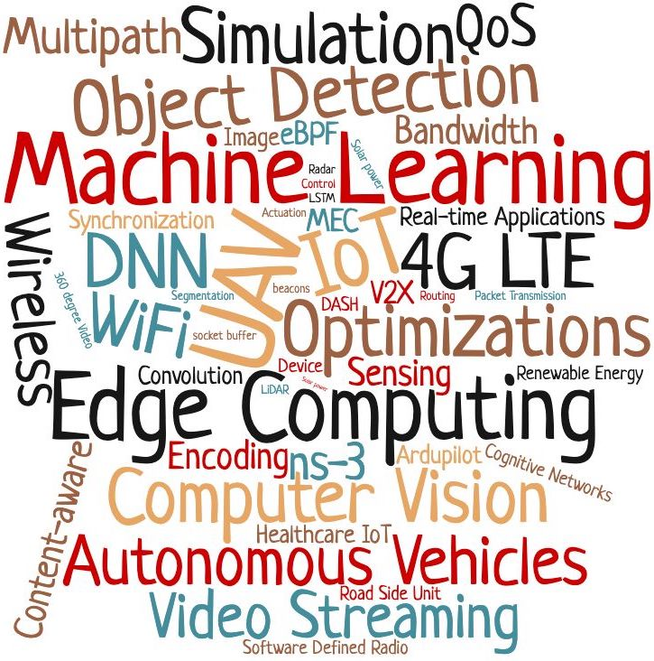
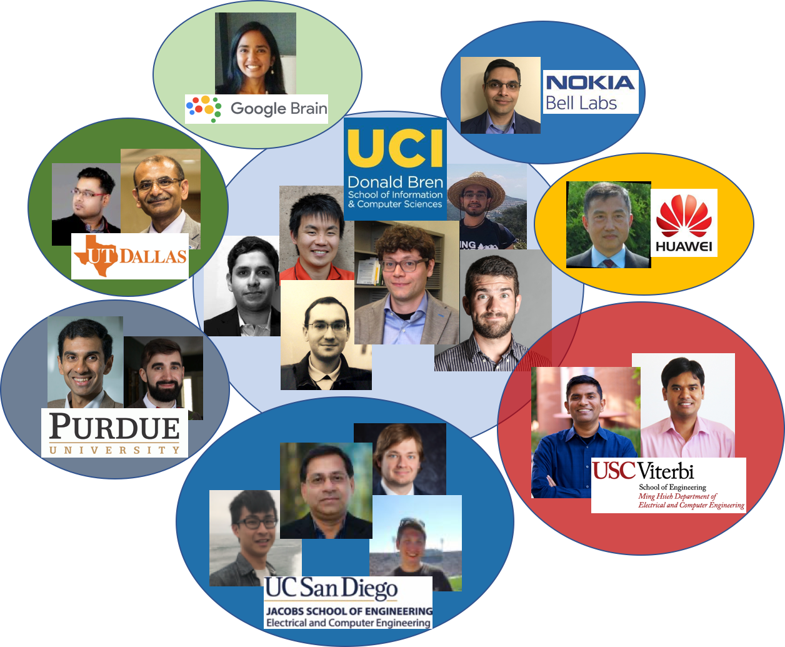

Lab Members
Current Students:
- Predicting Human Depression with Hybrid Data Acquisition utilizing Physical Activity Sensing and Social Media Feeds
MH Uddin, S Baidya
arXiv preprint arXiv:2505.22779, 2025
[PDF] | [View on GitHub]
- Large Language Models in the IoT Ecosystem--A Survey on Security Challenges and Applications
K Khatiwada, J Hopper, J Cheatham, A Joshi, S Baidya
arXiv preprint arXiv:2505.17586, 2025
[PDF] | [View on GitHub]
- A Hierarchical Optimization Framework Using Deep Reinforcement Learning for Task-Driven Bandwidth Allocation in 5G Teleoperation
N Golmohammadi, MM Rayguru, S Baidya
arXiv preprint arXiv:2505.15977, 2025
[PDF] | [View on GitHub]
Current External Student Collaborators:
- Yu-Jen Ku (PhD, ECE, UCSD)
- Basar Kutukcu (PhD, ECE, UCSD)
- Bryse Flowers (PhD, ECE, UCSD)
Active Research Areas
- System Optimizations for Edge/Cloud Computing
- Building Simulators for Autonomous Systems with Digital Twin
- Multi-modal Sensor Fusion for Connected and Autonomous Vehicles
- Adaptive Robust and Efficient Computing and Communications for UAVs
- Design Space Exploration for AI Applications on Embedded Systems
- Adaptive 360 degree Video Streaming and AR/VR
- Smart and Connected Healthcare IoT

Some past and present projects are listed here: Projects
Projects
-
Collaborative Perception over Vehicular Edge Computing
Developing efficient task partitioning algorithms and real-time multi-sensor fusion for improved collaborative vision in smart transportation systems. Features a prototype testbed with smart vehicles and edge computing nodes.
[View Project Details]
-
Design Space Exploration for ML Applications
Conducting design-space exploration for software-hardware co-design of application-driven adaptive computing systems, focusing on optimizing power, area, and speed while maintaining high accuracy and low latency.
[View Project Details]
-
Resilient Computation for UAV Systems
Developing "Hydra", an architecture for flexible sensing-analysis-control pipelines over autonomous airborne systems, introducing the concept of information autonomy for edge-assisted UAV applications.
[View Project Details]
-
Renewable Energy-driven Vehicular Edge Computing
Creating machine learning models to predict small cell operation time based on communication traffic, computing demand, and environmental factors, maximizing renewable energy utilization.
[View Project Details]
-
Robust UAV Communications
Designing a robust multi-path communication framework for UAV systems, featuring a fully open-sourced integrated UAV-network simulator called "FlyNestSim".
[View Project Details]
-
Software-Defined Edge Computing
Developing a content and computation-aware communication control framework based on SDN paradigm, using extended Berkeley Packet Filter (eBPF) for efficient multi-streaming.
[View Project Details]
-
Cognitive Interference Control
Creating a cognitive interference control framework for heterogeneous local access networks in urban IoT systems, optimizing transmission patterns for improved throughput and accuracy.
[View Project Details]
External Collaborators
- Sujit Dey, Professor, University of California San Diego
- Anand Raghunathan, Professor, Purdue University
- Marco Levorato, Associate Professor, University of California, Irvine
- Truong Nguyen, Professor, University of California San Diego
- Dinesh Bharadia, Assistant Professor, University of California San Diego
- Xinyu Zhang, Associate Professor, University of California San Diego
- Sameer Singh, Assistant Professor, University of California, Irvine
- Bhaskar Krishnamachari, Professor, University of Southern California
- Ravi Prakash, Professor, University of Texas at Dallas
- Aakanksha Chowdhery, Machine Learning Engineer, Google Brain

Publications
-
Adaptive Computation Partitioning in Edge Computing Systems
M. H. Uddin, S. Dey, and S. Sabur, "IEEE Conference on Edge Computing", 2024.
[PDF] |
[View on GitHub]
-
Digital Twin for Autonomous Vehicle Testing
S. Sabur, A. Chowdhery, and B. Krishnamachari, "IEEE Transactions on Intelligent Transportation Systems", 2023.
[PDF] |
[View on GitHub]
-
Multi-modal Sensor Fusion for Connected Autonomous Vehicles
Y. Ku, S. Sabur, and T. Nguyen, "IEEE Internet of Things Journal", 2023.
[PDF] |
[View on GitHub]
For a complete list of publications, please visit our publications page.
Recent News
- 09/2021: One collaborative paper on sustainable vehicular edge computing is accepted in IEEE Transaction on Vehicular Technology 2021
- 09/2021: AIMSLab got affiliated with the Louisville Automation and Robotics Research Institute (LARRI) at UofL.
- 07/2021: One collaborative paper got accepted in IEEE CLUSTER 2021
- 07/2021: AIMSLab established in the CSE department at University of Louisville (UofL).
View News Archive →